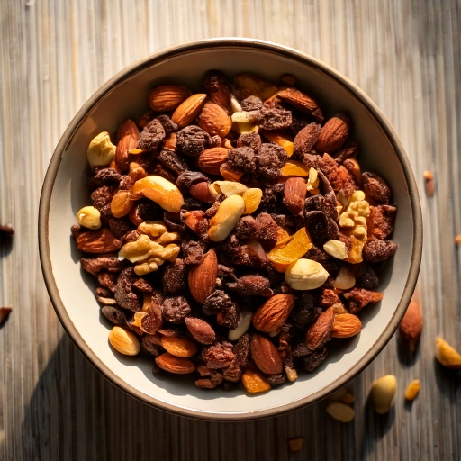

A simple mix of nuts, dried fruit, and dark chocolate chips.
Nutrition (per serving)
317
Calories
25g
Carbs
7g
Protein
23g
Fat
5g
Fiber
~35
Est. GI
Why this fits a diabetes-friendly diet
At 25g of carbs per serving, it's worth pairing with protein or fat and watching portion size to keep the resulting blood sugar rise gradual, and its estimated glycemic index of ~35 means the carbs it does have tend to digest slowly rather than spiking blood sugar fast.
Ingredients
- 1/2 cup almonds
- 1/2 cup walnuts
- 1/2 cup raisins
- 1/4 cup dark chocolate chips
Instructions
- Combine all ingredients in a bowl or jar.
- Portion into snack-size bags.
In GlucoBeacon
This recipe is one of 150+ in the GlucoBeacon Recipe Library, each with full nutrition breakdown, glycemic index estimate, and one-tap logging straight to your blood sugar history. Get notified when GlucoBeacon launches →